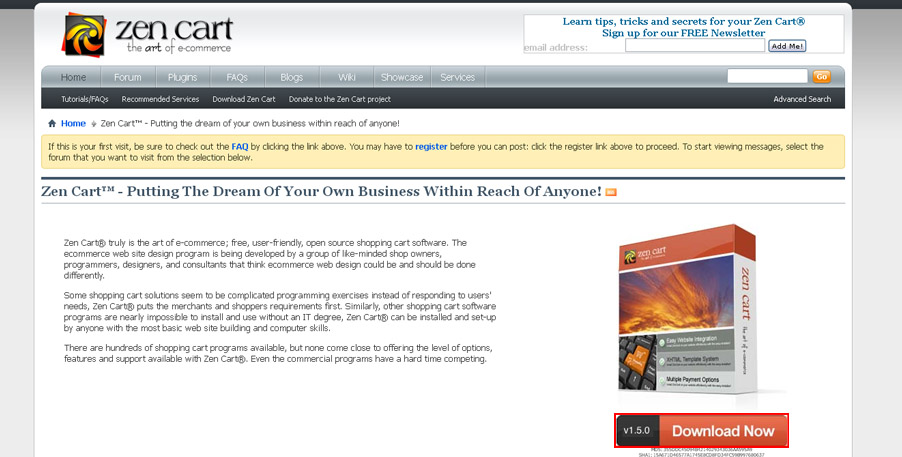
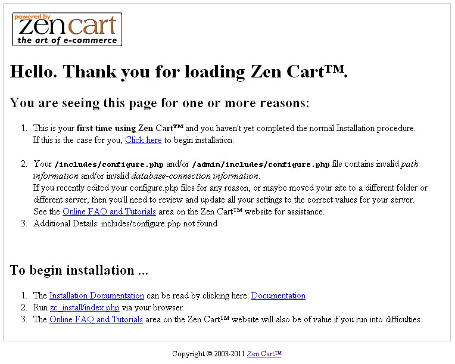
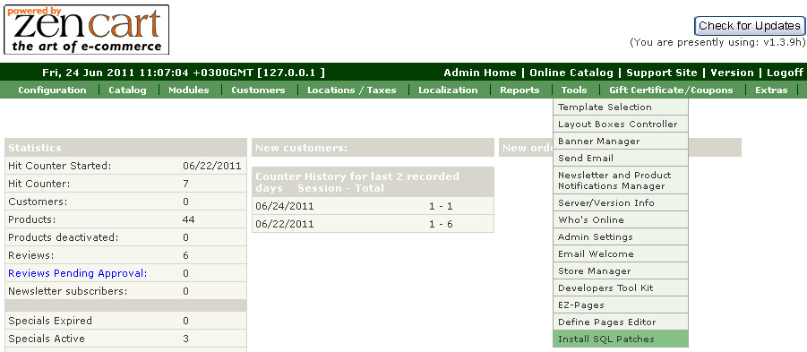
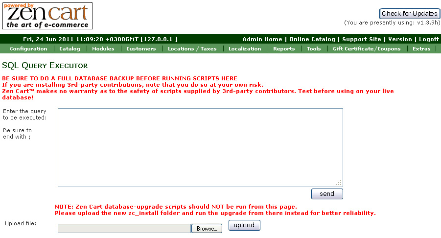
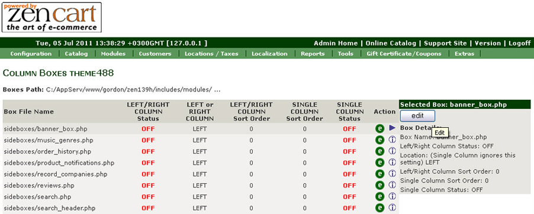
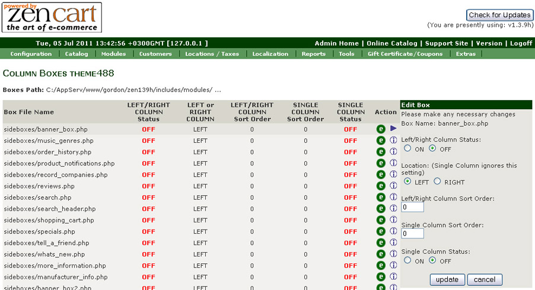

Zen Cart installation from scratch:
Downloading Zen Cart engine
Make sure to check the template software requirements at the preview page for the required version of Zen Cart. We can't guarantee the correct work of the template if your version of Zen Cart engine doesn't meet these requirements.
- Visit Zen Cart official website at http://www.zen-cart.com/
- From the right box click Download 
If you need earlier version of Zen Cart engine:
- From the right box click Click here to download older versions
- Locate and download the required version
When you are done with Zen Cart engine download you need to extract the files from the downloaded package and upload them to your hosting server. Feel free to check the tutorials on how to extract the files with WinZip (Windows OS) and StuffitExpander(MAC OS) and how to upload files to the hosting server
After uploading Zen Cart engine files to your hosting server you can start engine installation procedure. In your browser address bar type the root to your Zen Cart installation directory and press Enter. You should see the initial Zen Cart installation screen. Follow the instructions on the screen to install Zen Cart engine.

Please check the detailed video tutorial on how to install Zen Cart engine.
How to install a Zen Cart Template.
1. How to install a Zen Cart Template.
First of all you need to download the purchased template to your computer. The download link is available from your order details page.
When the template download is complete you need to extract the files from the downloaded package. This can be done using the WinZip (Windows OS) or Stuffit Expander (MAC OS) applications. Don't forget to extract the files from the inner sources_XXXX.zip package. The sources archive is password protected and contains the template source files. The password can be obtained from the order details page.
The installation process is quite simple. Open the template folder with the extracted Zen Cart template files. You should see the following files structure:
- documentation * (Product documentation. Information about installing and configuring themes)
- screenshots * (Screenshots of the theme)
- theme659 * (Root file folder theme)
- includes * (File folder theme)
- sources * (Sources)
- clipart_library* (Clipart library)
- psd* (PSD layouts and buttons of the first page)
- images* (Product images, social services and key lightbox)
- ZENCART_FULL.sql* (Contains sample products and store settings)
- ZENCART_SHORT.sql* (Contacts only store and theme settings)
- ZENCART_SOCIAL.sql* (Set of social icons on the product page)
- info.txt* (Information about archive)
- fonts_info.txt* (Information about the fonts used in the template)
1. Open the "theme###" folder and upload the "includes" folder to Zen Cart installation root on your server.
FILES INCLUDED IN THIS PACKAGE:
- includes/languages/english/html_includes/theme659/ define_main_page.php
- includes/modules/theme659/also_purchased_products.php
- includes/modules/theme659/featured_products.php
- includes/modules/theme659/new_products.php
- includes/modules/theme659/specials_index.php
- includes/templates/theme659/buttons/* (buttons to match design)
- includes/templates/theme659/common/tpl_box_default_left.php
- includes/templates/theme659/common/tpl_box_default_right.php
- includes/templates/theme659/common/tpl_footer.php
- includes/templates/theme659/common/tpl_header.php
- includes/templates/theme659/common/tpl_main_page.php
- includes/templates/theme659/css/CSS_read_me.txt
- includes/templates/theme659/css/print_stylesheet.css
- includes/templates/theme659/css/stylesheet.css
- includes/templates/theme659/css/stylesheet_css_buttons.css
- includes/templates/theme659/css/stylesheet_boxes.css
- includes/templates/theme659/css/stylesheet_main.css
- includes/templates/theme659/css/stylesheet_tm.css
- includes/templates/theme659/images/* (logo, different color images, shadow images, etc.)
- includes/templates/theme659/sideboxes/ ...
- includes/templates/theme659/templates/ ...
NOTE: Replacement of these files will not damage your store
2. Then open Zen Cart store admin panel and go to "Tools > Template Selection".
3. In the right column click Edit button and in the appeared select box choose new template (theme###).
2. How to install Zen Cart sample data
To make your template look like on the live demo you need to install the template sample data. Sample data contains the website settings, sample products, modules, menus, images etc. It is useful when you want to see the template functionality or the examples of the pages design and layout.
Zen Cart templates are provided with four SQL files that contains all website sample content(except the images) and sample website settings. The SQL files can be imported into your database using your database management tool (usually phpMyAdmin) or directly through Zen Cart admin panel: Tools > Install SQL Patches
- ZENCART_FULL.sql – contains sample products and store settings. Use it with clear Zen Cart installation.
- ZENCART_SHORT.sql – contacts only store and theme settings. Installing short dump won't replace your store goods.
- ZENCART_SOCIAL.sql - set of social icons on the product page
ATTENTION: Importing the SQL file to your database will overwrite your existing content and website settings. DO NOT import the SQL file if you want to keep the existing content
NOTE: ALWAYS backup your database before performing any modifications
To install sample data provided with the template you should open Zen-Cart admin panel > Tools > Install SQL Patches
You will get 2 options, either execute SQL query or upload .sql file. The result will be the same either option you choose. We’ll stay with the second option as the template includes 4 .sql files.
Click on the "Browse" button and navigate to "sources" folder of the template package, select the .sql file and press the "Upload" button to execute it.
Feel free to check the detailed tutorial on how to install Zen Cart template sample data
IMPORTANT: the .sql files must be imported in a strict order. First you should upload ZENCART_SHORT.SQL and only after that – ZENCART_FULL.SQL
3. Zen Cart template manual configuration
This step shows how to configure Zen Cart template manually. In case you already imported the template SQL files you can skip this step.
1. First of all you need to configure the store modules.
Go to "Tools" then "Layout Boxes Controller" and turn on the side boxes you would like to use. This template is set for both to use: right and left side boxes.
To configure the modules like on the template preview please use the following settings:
| Box File Name | LEFT/RIGHT COLUMN Status | LEFT or RIGHT COLUMN | LEFT/RIGHT COLUMN Sort Order |
| search_header.php | OFF | LEFT | 0 |
| specials.php | ON | RIGHT | 2 |
| categories.php | OFF | LEFT | 1 |
| banner_box.php | ON | RIGHT | 1 |
| information.php | OFF | LEFT | 2 |
| ezpages.php | OFF | LEFT | 2 |
| best_sellers.php | OFF | LEFT | 2 |
| banner_box_all.php | OFF | LEFT | 7 |
| whats_new.php | OFF | LEFT | 8 |
| search.php | OFF | LEFT | 2 |
| shopping_cart.php | OFF | RIGHT | 1 |
| currencies.php | OFF | LEFT | 4 |
| manufacturers.php | OFF | LEFT | 12 |
| manufacturer_info.php | OFF | LEFT | 13 |
| music_genres.php | OFF | LEFT | 14 |
| order_history.php | OFF | LEFT | 15 |
| tell_a_friend.php | OFF | LEFT | 16 |
| languages.php | OFF | LEFT | 17 |
| whos_online.php | OFF | LEFT | 18 |
| more_information.php | OFF | LEFT | 19 |
| reviews.php | OFF | LEFT | 20 |
| featured.php | OFF | LEFT | 21 |
| product_notifications.php | OFF | LEFT | 22 |
| record_companies.php | OFF | LEFT | 23 |
| document_categories.php | OFF | LEFT | 24 |
| banner_box2.php | OFF | LEFT | 25 |
2. When you are done with the modules you need to update the store configuration settings.
a)Manually edit options and features in the admin area.
| Column Width - Left Boxes | 220px |
| Column Width - Right Boxes | 220px |
| Bread Crumbs Navigation Separator | :: |
| Define Breadcrumb Status | 0 |
| Bestsellers - Number Padding | |
| Bestsellers - Truncate Product Names | 35 |
| Bestsellers - Truncate Product Names followed by ... | true |
| Categories Box - Show Specials Link | false |
| Categories Box - Show Products New Link | false |
| Shopping Cart Box Status | 0 |
| Categories Box - Show Featured Products Link | false |
| Categories Box - Show Products All Link | false |
| Column Left Status - Global | 0 |
| Column Right Status - Global | 1 |
| Column Width - Left | 220px |
| Column Width - Right | 220px |
| Categories Separator between links Status | 1 |
| Categories Separator between the Category Name and Count | -> |
| Categories Separator between the Category Name and Sub Categories | |
| Categories Count Prefix | ( |
| Categories Count Suffix | ) |
| Categories SubCategories Indent | |
| Categories with 0 Products Status | 0 |
| Split Categories Box | true |
| Shopping Cart - Show Totals | 1 |
| Customer Greeting - Show on Index Page | 0 |
| Categories - Always Show on Main Page | 0 |
| Main Page - Opens with Category | 0 |
| Categories - Always Open to Show SubCategories | 1 |
| Banner Display Groups - Header Position 1 | banner-1 |
| Banner Display Groups - Header Position 2 | |
| Banner Display Groups - Header Position 3 | |
| Banner Display Groups - Footer Position 1 | |
| Banner Display Groups - Footer Position 2 | |
| Banner Display Groups - Footer Position 3 | |
| Banner Display Groups - Side Box banner_box | SideBox-Banners |
| Banner Display Groups - Side Box banner_box2 | SideBox-Banners |
| Banner Display Group - Side Box banner_box_all | BannersAll |
| Footer - Show IP Address status | 0 |
| Product Discount Quantities - Add how many blank discounts? | 5 |
| Product Discount Quantities - Display how many per row? | 5 |
| Categories/Products Display Sort Order | 0 |
| Option Names and Values Global Add, Copy and Delete Features Status | 1 |
| Categories-Tabs Menu ON/OFF | 0 |
| Site Map - include My Account Links? | No |
| Skip 1-prod Categories | true |
| Use split-login page | false |
| CSS Buttons | No |
Go to "Configuration" then " Product" and set:
| Previous Next - Button and Image Status | 0 |
| Previous Next - Navigation Includes Category Position | 1 |
| Previous Next - Navigation Includes Category Name and Image Status | 2 |
| Previous Next - Navigation Bar Position | 2 |
| Previous Next - Button and Image Settings | 0 |
| Previous Next - Sort Order | 1 |
| Previous Next - Image Width? | 50 |
| Previous Next - Image Height? | 40 |
| Products - Products Option Name Sort Order | 0 |
| Products - Product Option Value of Attributes Sort Order | 1 |
| Product - Show Option Values Name Below Attributes Image | 1 |
| Product - Show Sales Discount Savings Status | 1 |
| Product - Show Sales Discount Savings Dollars or Percentage | 1 |
| Product - Show Sales Discount Savings Percentage Decimals | 0 |
| Product - Price is Free Image or Text Status | 1 |
| Product - Price is Call for Price Image or Text Status | 1 |
| Product Quantity Box Status - Adding New Products | 1 |
| Product Reviews Require Approval | 1 |
| Meta Tags - Include Product Model in Title | 1 |
| Meta Tags - Include Product Price in Title | 1 |
| Meta Tags Generated Description Maximum Length? | 50 |
| Also Purchased Products Columns per Row | 3 |
Go to "Configuration" then " Index listing" and set:
| Show New Products on Main Page | 0 |
| Show Featured Products on Main Page | 2 |
| Show Special Products on Main Page | 0 |
| Show Upcoming Products on Main Page | 0 |
| Show New Products on Main Page - Category with SubCategories | 0 |
| Show Featured Products on Main Page - Category with SubCategories | 2 |
| Show Special Products on Main Page - Category with SubCategories | 3 |
| Show Upcoming Products on Main Page - Category with SubCategories | 4 |
| Show New Products on Main Page - Errors and Missing Products Page | 1 |
| Show Featured Products on Main Page - Errors and Missing Products Page | 2 |
| Show Special Products on Main Page - Errors and Missing Products Page | 3 |
| Show Upcoming Products on Main Page - Errors and Missing Products Page | 4 |
| Show New Products - below Product Listing | 0 |
| Show Featured Products - below Product Listing | 0 |
| Show Special Products - below Product Listing | 0 |
| Show Upcoming Products - below Product Listing | 0 |
| New Products Columns per Row | 1 |
| Featured Products Columns per Row | 1 |
| Special Products Columns per Row | 1 |
| Filter Product Listing for Current Top Level Category When Enabled | 1 |
Go to "Configuration" then " EZ-Pages Settings " and set:
| EZ-Pages Display Status - HeaderBar | 1 |
| EZ-Pages Display Status - FooterBar | 1 |
| EZ-Pages Display Status - Sidebox | 1 |
| EZ-Pages Prev/Next Buttons | 2 |
| EZ-Pages Table of Contents for Chapters Status | 1 |
3. The next step is to configure the store content pages and menus (EZ-Pages). Please go to Zen Cart admin panel > Tools > EZ-Pages and set the following configuration options:
Our menu:
-
home:
- Open New Window:Off
- Page is SSL:Off
- Header:On
- Sidebox:Off
- Footer:On
- Chapter:0
- TOC:0;
-
specials:
- Open New Window:Off
- Page is SSL:Off
- Header:On
- Sidebox:Off
- Footer:On
- Chapter:0
- TOC:0;
-
new products:
- Open New Window:Off
- Page is SSL:Off
- Header:On
- Sidebox:Off
- Footer:On
- Chapter:0
- TOC:0;
-
all products:
- Open New Window:Off
- Page is SSL:Off
- Header:On
- Sidebox:Off
- Footer:On
- Chapter:0
- TOC:0;
-
reviews:
- Open New Window:Off
- Page is SSL:Off
- Header:On
- Sidebox:Off
- Footer:On
- Chapter:0
- TOC:0;
-
contact us:
- Open New Window:Off
- Page is SSL:Off
- Header:On
- Sidebox:Off
- Footer:On
- Chapter:0
- TOC:0;
-
faq:
- Open New Window:Off
- Page is SSL:Off
- Header:On
- Sidebox:Off
- Footer:On
- Chapter:0
- TOC:0;
How to manage modules
To manage Left/Right boxes open Zen Cart admin panel > Tools > Layout Boxes Controller.
You will see the list of available modules. Select one, then in the right pane click "Edit" button.
When you use both left and right columns you can change the following properties:
Left/Right Column Status: ON=visible, OFF=hidden
Location: LEFT or RIGHT position of the sidebox
Left/Right Column Sort Order: low number sideboxes comes on the top of the column
Note that Single Column settings do not currently affect the page display, and can generally be ignored.
If you would not like any side boxes on this site please, simply go to your admin under "Configuration", then "Layout Settings", and set the "Column Left Status - Global" "Column Right Status - Global" to "0". This will turn off both left and right side boxes globally, whether or not any of them are set to "on" under "Layout Boxes Controller".
Theme customization
How to change store logo
To use your own logo, simply overwrite "logo.jpg" that is located in includes/templates/theme###/images/ .
You can create an image that is larger than the default one. If it doesn't match the header dimensions you'll need to perform style modifications in the /includes/templates/theme###/css/stylesheet_tm.css file.
How to change store colors
To change the site colors you need to edit the CSS files in the /includes/templates/theme###/css/. You can learn more about working with the CSS files checking the detailed video tutorials.
How to configure content pages
To access the store content pages open Zen Cart admin panel and go to tools > EZ-Pages. All content pages are displayed there. Each page has the following configuration options:
- Open New Window:Off * (open links in new browser tab)
- Page is SSL:Off * (page is SSL)
- Header:On * (menu links to header)
- Sidebox:Off * (menu links in sidebox)
- Footer:On * (menu links to footer)
- Chapter:0 * (Chapters are used with TOC Sort Order for the display on Previous/Next. Links in the TOC will consist of pages matching this chapter number, and will be displayed in the TOC Sort Order )
- TOC:0; * (Sort Order used while generating pages that are customized as either a single row (header/footer, etc) or vertically, based on individual needs; Sort order should be greater than zero to enable this page in the listing)
Zen Cart Add-ons:
1. Social Media Icons Module
This module enables the display of social network icons on the product page as well the option of sharing your product info in the social network sites (Goolge Plus, Facebook, Twitter,Delecious, Digg, Stumble Upon, Technorati, Reddit).
Module Setup: For the Social Media Icons Module setup the installation of ZENCART_SOCIAL.SQL is required. The SQL patch can be imported using the Zen Cart admin panel > Tools > Insall SQL Patches option.
Configuration: To configure the module please go to Configuration > Social Media Icons in Zen Cart admin. All icons are active by default.
Deactivate all icons - Social Media Buttons - set value to 0 Switch on/off certain icons: choose icon title - set value to 1 or 0 (1 = on, 0 = off).
2. Footer Links in Columns Module
The module enables the display of footer links in lines as well as in columns. The number of columns and the position of every item in the column are defined by the order that is set in Admin > Tools > EZ-Pages.
The first digit in the sort order sets the column number for the link location, the number of columns depends on the quantity of first digits available. The second digit in the sort order defines the link location in the column.
For example:
in the first column the links with sort order 11, 12, 13, 14, 15 will be displayed
in the second column the links with the sort order set to 21, 22, 23, 24, 25 will be displayed
in the third one the links with the sort order set to 31, 32, 33, 34, 35 will be displayed etc.
The templates with add-ons 1 and 4 will be available soon. None of them are in stock yet.
3. Extra Product Images
The new Zen-cart feature allows you to display the additional product images on the product page and open them in the lightbox. To make the extra images display on the product page please put them into the folder with the product images.
- Open Zen Cart admin panel
- Go to Catalog > On the product editing screen scroll down and find the image file name and open the product you want to modify.
- On the product editing screen scroll down and find the image file name
Create new product images with the names, that contain the default product image file name.
See the example of titles for the files:
For example:
Default product image name: 01.jpg
Additional product image names: 01_1.jpg, 01-2.jpg etc
Or
Default product image name: my_product.jpg
Additional product image names: my_product _1.jpg, my_product -2.jpg etc
Upload the additional images to the directory where the default image is located. Usually the product images are stored in the “images” directory of your Zen Cart installation.
When the upload is complete open the product page in browser and refresh it. You should see additional images at the bottom of the page.
The number of additional images is unlimited.
Template-help: Zen Cart. How to create multiple product images
Conclusion
Zen Cart engine is a great solution for your online store. The default engine package contains all modules necessary for successful sales. Open source allows you to offer really outstanding merchant possibilities for your customers. Due to the quite complex engine structure advanced usage of Zen Cart will require much time and aspiration. You'll need much more than this manual.
The following resources will help you to become a true Zen Cart professional: